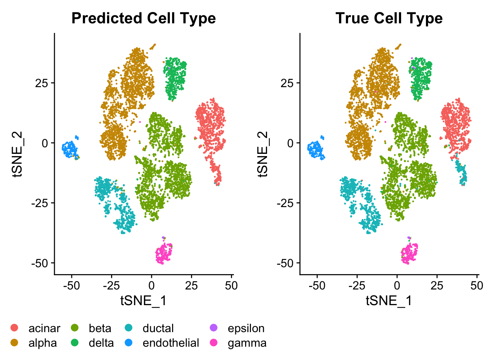
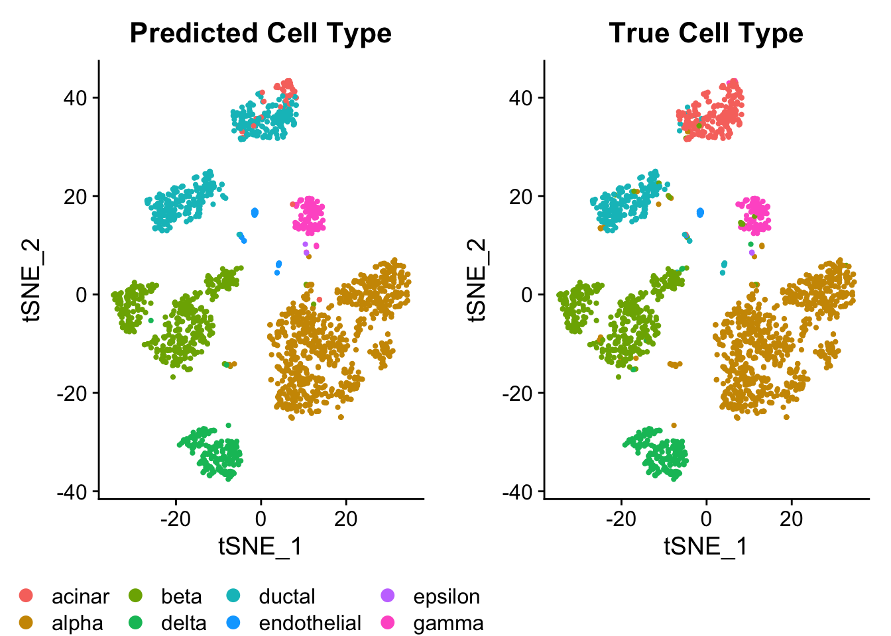

Last updated: 2021-01-07
Checks: 7 0
Knit directory: project-cell-type-annotation/
This reproducible R Markdown analysis was created with workflowr (version 1.6.2). The Checks tab describes the reproducibility checks that were applied when the results were created. The Past versions tab lists the development history.
Great! Since the R Markdown file has been committed to the Git repository, you know the exact version of the code that produced these results.
Great job! The global environment was empty. Objects defined in the global environment can affect the analysis in your R Markdown file in unknown ways. For reproduciblity it’s best to always run the code in an empty environment.
The command set.seed(20201203) was run prior to running the code in the R Markdown file. Setting a seed ensures that any results that rely on randomness, e.g. subsampling or permutations, are reproducible.
Great job! Recording the operating system, R version, and package versions is critical for reproducibility.
Nice! There were no cached chunks for this analysis, so you can be confident that you successfully produced the results during this run.
Great job! Using relative paths to the files within your workflowr project makes it easier to run your code on other machines.
Great! You are using Git for version control. Tracking code development and connecting the code version to the results is critical for reproducibility.
The results in this page were generated with repository version 7d96421. See the Past versions tab to see a history of the changes made to the R Markdown and HTML files.
Note that you need to be careful to ensure that all relevant files for the analysis have been committed to Git prior to generating the results (you can use wflow_publish or wflow_git_commit). workflowr only checks the R Markdown file, but you know if there are other scripts or data files that it depends on. Below is the status of the Git repository when the results were generated:
Ignored files:
Ignored: .Rhistory
Ignored: .Rproj.user/
Unstaged changes:
Modified: analysis/evaluation.Rmd
Note that any generated files, e.g. HTML, png, CSS, etc., are not included in this status report because it is ok for generated content to have uncommitted changes.
These are the previous versions of the repository in which changes were made to the R Markdown (analysis/Seurat.Rmd) and HTML (docs/Seurat.html) files. If you’ve configured a remote Git repository (see ?wflow_git_remote), click on the hyperlinks in the table below to view the files as they were in that past version.
| File | Version | Author | Date | Message |
|---|---|---|---|---|
| Rmd | 7d96421 | speckerf | 2021-01-07 | wflow_publish(“analysis/Seurat.Rmd”) |
| html | 777844c | speckerf | 2021-01-06 | Build site. |
| Rmd | f969a51 | stinea98 | 2021-01-06 | add everything |
| html | b744d3b | speckerf | 2021-01-06 | Build site. |
| Rmd | 2ec2e35 | speckerf | 2021-01-06 | add stines comments to theory part |
| html | f84db0a | speckerf | 2021-01-06 | Build site. |
| Rmd | a8509f7 | speckerf | 2021-01-06 | add felix’ changes |
| html | 2f540fd | speckerf | 2021-01-04 | Build site. |
| Rmd | 200299e | speckerf | 2021-01-04 | add some comments |
| html | 20d4320 | speckerf | 2021-01-04 | Build site. |
| Rmd | 5716e24 | speckerf | 2021-01-04 | Seurat Theory Text |
| html | a675d96 | speckerf | 2021-01-03 | Build site. |
| Rmd | e757d05 | speckerf | 2021-01-03 | updated Seurat file |
| html | 6e02fb2 | speckerf | 2021-01-02 | Build site. |
| Rmd | 72ee1b5 | speckerf | 2021-01-02 | adjust graphs and export predictions |
| html | 68ec844 | speckerf | 2020-12-30 | Build site. |
| Rmd | 872c015 | speckerf | 2020-12-30 | verbose = FALSE |
| html | 55af0ea | speckerf | 2020-12-30 | Build site. |
| Rmd | 1ae07f4 | speckerf | 2020-12-30 | no warnings |
| html | d2ceb8b | speckerf | 2020-12-30 | Build site. |
| Rmd | f80d9f6 | speckerf | 2020-12-30 | Seurat predictions |
The R package Seurat is a tool for quality control, analysis, and exploration of single-cell RNA-seq data. The version Seurat v3 introduced an anchoring procedure that is designed to integrate across technologies and modalities. In short, the method determines anchors between a pair of dataset and then uses these anchors to transfer cell type labels from the reference dataset to the query dataset. (Stuart et al. 2019)
Method description:
After normalization, feature selection and dimensionality reduction, the key step of Seurat is the unsupervised determination of anchors between two datasets. An anchor represents two cells (one from each dataset), which are predicted to come from an identical biological state.
Anchors are found in the low-dimensional space, but scored in the high-dimensional space of the expression data in a procedure further described in Stuart et al. (2019). Anchors are then weighted based on their score and the distance between the query cell and the anchor and we obtain a weight Matrix \(M\), which represents the association between all pairs of query cells and anchors.
After having found, scored and weighted the anchors, we can use them to transfer metadata (in our case cell labels) from the reference to the query dataset. The predictions \(P_l\) are calculated by multiplying the anchor classification matrix \(L\) with the weights matrix \(M\): \[P_l=LW^T\] The binary classification matrix \(L\) contains the classification information for each anchor cell in the reference dataset
The principle of anchors can also be used to first integrate multiple reference datasets into a single reference and then in a second step transfer cell types from combined references onto a query dataset. A further posibility of Seurat is to integrate data from different modalities (e.g. integrate scRNA-seq data with scATAC-seq data) into a single dataset, which might resolve differences between cell types that would remain unresolvable with either scRNA-seq or scATAC-seq data alone.
The workflow below is adopted from the official webpage of the software.
suppressMessages(library(SingleCellExperiment))
suppressMessages(library(scRNAseq))
suppressMessages(library(AnnotationHub))
suppressMessages(library(Seurat))
suppressMessages(library(scater))
suppressMessages(library(cowplot))
suppressMessages(library(uwot))
suppressMessages(library(ggplot2))
suppressMessages(library(patchwork))We read in the datasets:
# muraro
muraro <- readRDS(file = "data/sce_muraro.RDS")
true_labels_muraro <- as.data.frame(table(muraro$label))
names(true_labels_muraro) <- c("cell_type", "True Muraro")
# baron
baron <- readRDS(file = "data/sce_baron.RDS")
true_labels_baron <- as.data.frame(table(baron$label))
names(true_labels_baron) <- c("cell_type", "True Baron")Next, we have to convert the datasets to Seurat objects. We are preprocessing the data using SCTransform(), which normalizes, scales and finds variable features for the data. The function uses regularized negative binomial regression to normalize and stabilize the variance (Hafemeister and Satija 2019).
muraro <- as.Seurat(muraro)
baron <- as.Seurat(baron)
baron <- SCTransform(baron, verbose = FALSE)
baron <- RunPCA(baron, npcs = 30, verbose = FALSE)
baron <- RunUMAP(baron, reduction = "pca", dims = 1:30)
baron <- RunTSNE(baron, reduction = "pca", dims = 1:30)
muraro <- SCTransform(muraro, verbose = FALSE)
muraro <- RunPCA(muraro, npcs = 30, verbose = FALSE)
muraro <- RunUMAP(muraro, reduction = "pca", dims = 1:30)
muraro <- RunTSNE(muraro, reduction = "pca", dims = 1:30)We start with Baron (2016) as our query dataset and Muraro (2016) as the reference.
anchors <- FindTransferAnchors(
reference = muraro,
query = baron,
normalization.method = "SCT",
reference.reduction = "pca",
dims = 1:30, verbose = FALSE
)
predictions <- TransferData(anchorset = anchors, refdata = muraro$label,
dims = 1:30)
baron <- AddMetaData(baron, metadata = predictions)pred_labels_baron <- as.data.frame(table(baron$predicted.id))
names(pred_labels_baron) <- c("cell_type", "Predicted by Seurat")
labels_baron_Seurat <- merge(pred_labels_baron, true_labels_baron)
knitr::kable(labels_baron_Seurat) #distribution of predicted labels| cell_type | Predicted by Seurat | True Baron |
|---|---|---|
| acinar | 1147 | 958 |
| alpha | 2329 | 2326 |
| beta | 2523 | 2525 |
| delta | 611 | 601 |
| ductal | 892 | 1077 |
| endothelial | 241 | 252 |
| epsilon | 13 | 18 |
| gamma | 256 | 255 |
p1.1 = DimPlot(baron, reduction = "tsne", group.by = "predicted.id", label = FALSE) + ggtitle(label = "Predicted Cell Type")
p1.2 = DimPlot(baron, reduction = "tsne", group.by = "label", label = FALSE) + ggtitle(label = "True Cell Type")
ggpubr::ggarrange(p1.1, p1.2, common.legend = TRUE, legend = "bottom")
| Version | Author | Date |
|---|---|---|
| f84db0a | speckerf | 2021-01-06 |
Overall Seurat’s predictions for the Baron dataset seem to be quite accurate. However, we can see in the t-SNE plots that there is one minor cluster of ductal cells in the center right was misclassified as acinar cells. This is also reflected in the table above: Seurat classified to many cells as acinar and too few as ductal.
Now we switch reference and query dataset and perform the same analysis.
anchors <- FindTransferAnchors(
reference = baron,
query = muraro,
normalization.method = "SCT",
reference.reduction = "pca",
dims = 1:30, verbose = FALSE
)
predictions <- TransferData(anchorset = anchors, refdata = baron$label,
dims = 1:30)
muraro <- AddMetaData(muraro, metadata = predictions)pred_labels_muraro <- as.data.frame(table(muraro$predicted.id))
names(pred_labels_muraro) <- c("cell_type", "Predicted by Seurat")
labels_muraro_Seurat <- merge(pred_labels_muraro, true_labels_muraro)
knitr::kable(labels_muraro_Seurat) #distribution of predicted labels| cell_type | Predicted by Seurat | True Muraro |
|---|---|---|
| acinar | 53 | 218 |
| alpha | 778 | 803 |
| beta | 447 | 446 |
| delta | 188 | 191 |
| ductal | 406 | 242 |
| endothelial | 42 | 20 |
| epsilon | 3 | 3 |
| gamma | 105 | 99 |
p2.1 = DimPlot(muraro, reduction = "tsne", group.by = "predicted.id") + ggtitle(label = "Predicted Cell Type")
p2.2 = DimPlot(muraro, reduction = "tsne", group.by = "label") + ggtitle(label = "True Cell Type")
ggpubr::ggarrange(p2.1, p2.2, common.legend = TRUE, legend = "bottom")
| Version | Author | Date |
|---|---|---|
| f84db0a | speckerf | 2021-01-06 |
Overall Seurat’s predictions for the Muraro dataset seem to be quite accurate with one exception. The t-SNE plots shows that the a large part of the cluster in the top was misclassified as ductal cells, where they are supposed to be acinar cells. In this case, the same two cell types (acinar and ductal) caused troubles,
This is also reflected in the table above: Seurat classified to many cells as acinar and too few as ductal.
In order to compare the predictions by the three methods, we again remove cells that where not fully assigned to a label by scClassify. This is done, because the unassigned cells are presumably harder to correctly classify for every method and therefore we can only compare the three methods, if these cells are exluded in the evaluation.
#extract true and predicted labels
pred.baron.labels <- baron$predicted.id
true.baron.labels <- baron$label
unassigned_baron <- readRDS(file="data/baron_unassigned_scClassify.rds")
pred.baron.labels <- pred.baron.labels[!unassigned_baron]
saveRDS(pred.baron.labels, file="data/Seurat.pred.baron.labels.rds")
true.baron.labels <- true.baron.labels[!unassigned_baron]
saveRDS(true.baron.labels, file="data/Seurat.true.baron.labels.rds")
pred.muraro.labels <- muraro$predicted.id
true.muraro.labels <- muraro$label
unassigned_muraro <- readRDS(file="data/muraro_unassigned_scClassify.rds")
pred.muraro.labels <- pred.muraro.labels[!unassigned_muraro]
saveRDS(pred.muraro.labels, file="data/Seurat.pred.muraro.labels.rds")
true.muraro.labels <- true.muraro.labels[!unassigned_muraro]
saveRDS(true.muraro.labels, file="data/Seurat.true.muraro.labels.rds")Hafemeister, Christoph, and Rahul Satija. 2019. “Normalization and Variance Stabilization of Single-Cell Rna-Seq Data Using Regularized Negative Binomial Regression.” Genome Biology 20 (1). Springer: 1–15.
Stuart, Tim, Andrew Butler, Paul Hoffman, Christoph Hafemeister, Efthymia Papalexi, William M Mauck III, Yuhan Hao, Marlon Stoeckius, Peter Smibert, and Rahul Satija. 2019. “Comprehensive Integration of Single-Cell Data.” Cell 177 (7). Elsevier: 1888–1902.
R version 4.0.3 (2020-10-10)
Platform: x86_64-apple-darwin17.0 (64-bit)
Running under: macOS Big Sur 10.16
Matrix products: default
BLAS: /Library/Frameworks/R.framework/Versions/4.0/Resources/lib/libRblas.dylib
LAPACK: /Library/Frameworks/R.framework/Versions/4.0/Resources/lib/libRlapack.dylib
locale:
[1] de_CH.UTF-8/de_CH.UTF-8/de_CH.UTF-8/C/de_CH.UTF-8/de_CH.UTF-8
attached base packages:
[1] parallel stats4 stats graphics grDevices utils datasets
[8] methods base
other attached packages:
[1] patchwork_1.1.1 uwot_0.1.10
[3] Matrix_1.2-18 cowplot_1.1.0
[5] scater_1.18.3 ggplot2_3.3.2
[7] Seurat_3.9.9.9024 AnnotationHub_2.22.0
[9] BiocFileCache_1.14.0 dbplyr_2.0.0
[11] scRNAseq_2.4.0 SingleCellExperiment_1.12.0
[13] SummarizedExperiment_1.20.0 Biobase_2.50.0
[15] GenomicRanges_1.42.0 GenomeInfoDb_1.26.2
[17] IRanges_2.24.0 S4Vectors_0.28.0
[19] BiocGenerics_0.36.0 MatrixGenerics_1.2.0
[21] matrixStats_0.57.0 workflowr_1.6.2
loaded via a namespace (and not attached):
[1] reticulate_1.18 tidyselect_1.1.0
[3] RSQLite_2.2.1 AnnotationDbi_1.52.0
[5] htmlwidgets_1.5.3 grid_4.0.3
[7] BiocParallel_1.24.1 Rtsne_0.15
[9] munsell_0.5.0 codetools_0.2-18
[11] ica_1.0-2 future_1.21.0
[13] miniUI_0.1.1.1 withr_2.3.0
[15] colorspace_2.0-0 highr_0.8
[17] knitr_1.30 rstudioapi_0.13
[19] ROCR_1.0-11 ggsignif_0.6.0
[21] tensor_1.5 listenv_0.8.0
[23] labeling_0.4.2 git2r_0.27.1
[25] GenomeInfoDbData_1.2.4 polyclip_1.10-0
[27] farver_2.0.3 bit64_4.0.5
[29] rprojroot_2.0.2 parallelly_1.22.0
[31] vctrs_0.3.6 generics_0.1.0
[33] xfun_0.19 R6_2.5.0
[35] ggbeeswarm_0.6.0 rsvd_1.0.3
[37] AnnotationFilter_1.14.0 bitops_1.0-6
[39] spatstat.utils_1.17-0 DelayedArray_0.16.0
[41] assertthat_0.2.1 promises_1.1.1
[43] scales_1.1.1 beeswarm_0.2.3
[45] gtable_0.3.0 beachmat_2.6.2
[47] globals_0.14.0 goftest_1.2-2
[49] ensembldb_2.14.0 rlang_0.4.9
[51] splines_4.0.3 rstatix_0.6.0
[53] rtracklayer_1.50.0 lazyeval_0.2.2
[55] broom_0.7.2 BiocManager_1.30.10
[57] yaml_2.2.1 reshape2_1.4.4
[59] abind_1.4-5 backports_1.2.1
[61] GenomicFeatures_1.42.1 httpuv_1.5.4
[63] tools_4.0.3 ellipsis_0.3.1
[65] RColorBrewer_1.1-2 ggridges_0.5.2
[67] Rcpp_1.0.5 plyr_1.8.6
[69] sparseMatrixStats_1.2.0 progress_1.2.2
[71] zlibbioc_1.36.0 purrr_0.3.4
[73] RCurl_1.98-1.2 prettyunits_1.1.1
[75] ggpubr_0.4.0 rpart_4.1-15
[77] openssl_1.4.3 deldir_0.2-3
[79] viridis_0.5.1 pbapply_1.4-3
[81] zoo_1.8-8 haven_2.3.1
[83] ggrepel_0.9.0 cluster_2.1.0
[85] fs_1.5.0 magrittr_2.0.1
[87] RSpectra_0.16-0 data.table_1.13.4
[89] scattermore_0.7 openxlsx_4.2.3
[91] lmtest_0.9-38 RANN_2.6.1
[93] whisker_0.4 ProtGenerics_1.22.0
[95] fitdistrplus_1.1-3 hms_0.5.3
[97] mime_0.9 evaluate_0.14
[99] xtable_1.8-4 XML_3.99-0.5
[101] rio_0.5.16 readxl_1.3.1
[103] gridExtra_2.3 compiler_4.0.3
[105] biomaRt_2.46.0 tibble_3.0.4
[107] KernSmooth_2.23-18 crayon_1.3.4
[109] htmltools_0.5.0 mgcv_1.8-33
[111] later_1.1.0.1 tidyr_1.1.2
[113] DBI_1.1.0 ExperimentHub_1.16.0
[115] MASS_7.3-53 rappdirs_0.3.1
[117] car_3.0-10 igraph_1.2.6
[119] forcats_0.5.0 pkgconfig_2.0.3
[121] GenomicAlignments_1.26.0 foreign_0.8-80
[123] plotly_4.9.2.2 scuttle_1.0.3
[125] xml2_1.3.2 vipor_0.4.5
[127] XVector_0.30.0 stringr_1.4.0
[129] digest_0.6.27 sctransform_0.3.2
[131] RcppAnnoy_0.0.18 spatstat.data_1.7-0
[133] Biostrings_2.58.0 cellranger_1.1.0
[135] rmarkdown_2.5 leiden_0.3.6
[137] DelayedMatrixStats_1.12.1 curl_4.3
[139] shiny_1.5.0 Rsamtools_2.6.0
[141] lifecycle_0.2.0 nlme_3.1-150
[143] jsonlite_1.7.2 carData_3.0-4
[145] BiocNeighbors_1.8.2 viridisLite_0.3.0
[147] askpass_1.1 pillar_1.4.7
[149] lattice_0.20-41 fastmap_1.0.1
[151] httr_1.4.2 survival_3.2-7
[153] interactiveDisplayBase_1.28.0 glue_1.4.2
[155] zip_2.1.1 spatstat_1.64-1
[157] png_0.1-7 BiocVersion_3.12.0
[159] bit_4.0.4 stringi_1.5.3
[161] blob_1.2.1 BiocSingular_1.6.0
[163] memoise_1.1.0 dplyr_1.0.2
[165] irlba_2.3.3 future.apply_1.6.0